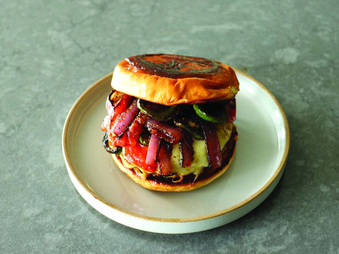

Home Page
Fajita Cheeseburger

Description
Chef John describes his fajita cheeseburger as "spicy, hot and juicy, and pretty much perfect."
The spices and fajita vegetables go beautifully with the pan-fried burger and Monterey Jack cheese, and the gorgeous mayo-toasted bun is a signature touch.
Ingredients
Fajita Seasoning
- 1 teaspoon chili powder
- 1 teaspoon smoked paprika
- 1/2 teaspoon cayenne pepper
- 1 teaspoon ground cumin
- 1/2 teaspoon dried Mexican oregano
- 1/2 teaspoon garlic powder
- 1/2 teaspoon onion powder
Burger
- 6 ounces ground beef
- salt and freshly ground black pepper, to taste
- 2 teaspoons unsalted butter
- 1 tablespoon olive oil
- 1 jalapeno, sliced into rings, seeded
- 1/2 tomato, quartered
- 1/4 red onion, cut into thick slices
- 1 hamburger bun
- 2 tablespoons mayonnaise, or as needed
- 1 slice Monterey Jack cheese
Steps
- Stir chili powder, paprika, cayenne, cumin, oregano, garlic powder, and onion powder together in a small bowl; set aside until needed.
- Shape ground beef into a burger as thick as you like, but preferably thinner to increase surface area, and season generously on both sides with salt and pepper.
Refrigerate until needed.
- Melt butter with olive oil in a skillet over medium-high heat.
Once butter begins to sizzle, transfer in the burger.
Add jalapeno, tomato, and red onion around the burger and arrange so vegetables are all touching the pan.
Season vegetables to taste with salt.
- Cook burger for about 3 minutes, then apply a very generous sprinkling of fajita spice mixture over burger and vegetables.
- Turn burger and vegetables once they begin to brown around the edges.
Generously sprinkle fajita spice over burger and vegetables, and cook until burger is no longer pink in the center, about 4 minutes more.
An instant-read thermometer inserted into the center should read at least 160 degrees F (70 degrees C).
If vegetables finish cooking before burger, remove them to a plate and keep warm.
- Meanwhile, spread the bun inside and out with mayonnaise and toast in a dry pan over medium- high heat until golden brown on both sides, about 3 minutes.
- When the burger is almost done, top with a slice of cheese.
Let cook for about 30 seconds. Pile fajita vegetables over cheese.
Serve on toasted bun with a lime wedge.